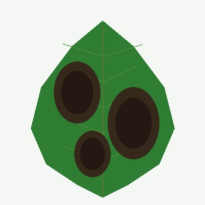
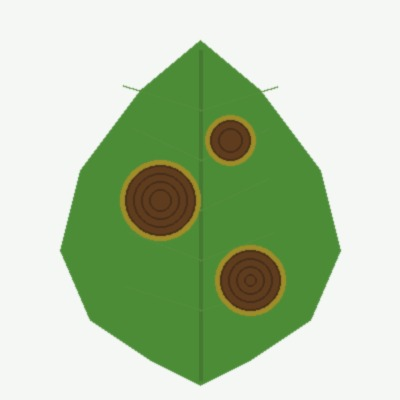
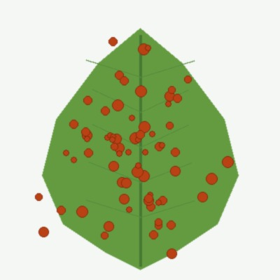
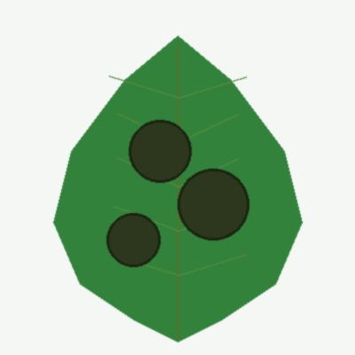
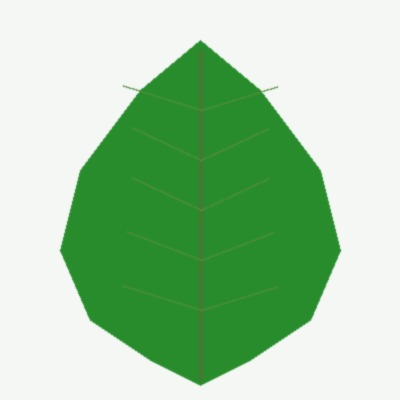

🌿 पत्ती स्कैनर एवं फोटो इनपुट
पत्ते को फ्रेम के बीच में रखें और साफ फोटो लें
📸
फोटो चुनें या यहां खींचें
पत्ती की फोटो यहां खींचें या क्लिक करके चुनें

टमाटर (Tomato)
पछेती झुलसा (Late Blight)

आलू (Potato)
अगेती झुलसा (Early Blight)

मक्का (Corn)
सामान्य रतुआ (Rust)

सेब (Apple)
पपड़ी रोग (Scab)

टमाटर (Tomato)
स्वस्थ पत्ता (Healthy Leaf)
🩺 निदान एवं उपचार सलाह (Diagnosis & Cure)
MobileNetV2 • 98.4% Acc
टमाटर • अत्यंत गंभीर
टमाटर का पछेती झुलसा रोग (लेट ब्लाइट)
रोगजनक: Phytophthora infestans • फफूंद जनित
पहचान सटीकता:
98.4%
🔍 रोग के मुख्य लक्षण
▼
पत्तियों और तनों पर पानी से भीगे हुए गहरे भूरे या काले धब्बे। नम व ठंडे मौसम में तेजी से फैलाव और पत्तियों के निचले हिस्से पर सफेद फफूंद दिखना।
🌿 जैविक / प्राकृतिक उपचार (सस्ता व सुरक्षित)
▼
नीम का तेल (5 मिली/लीटर) थोड़े साबुन के साथ घोलकर छिड़कें। ट्राइकोडर्मा विरिडी (5 ग्राम/लीटर) का छिड़काव करें। प्रभावित पत्तियों को तुरंत तोड़कर खेत से दूर जला दें।
🧪 रासायनिक कीटनाशक / कवकनाशी (सटीक मात्रा)
▼
मैनकोज़ेब 75% WP (2.5 ग्राम प्रति लीटर) या रिडोमिल गोल्ड (2 ग्राम प्रति लीटर पानी) का छिड़काव करें।
🛡️ रोकथाम और सावधानियां (फसल चक्र व जल प्रबंधन)
▼
ऊपर से पानी देने (स्प्रिंकलर) से बचें, ड्रिप सिंचाई अपनाएं। पौधों के बीच 60 सेमी की दूरी रखें। आलू और मिर्च के साथ फसल चक्र न करें।
🌾 पोषण एवं उर्वरक सलाह
▼
उमस या ठंड में यूरिया (नाइट्रोजन) की अधिकता से बचें। पोटाश और बोरोन का संतुलित उपयोग करें ताकि पत्तियों की झिल्ली मजबूत बने।
अन्य संभावित रोग (Top-3 तुलना):